Ressonância magnética
Imagens detalhadas de cérebro, coluna, articulações e órgãos, feitas com campo magnético.
- Cérebro
- Coluna
- Joelho
- Ombro
- Abdômen
Consultas, laboratório próprio e centro de imagem com ressonância, tomografia, mamografia, ultrassom e densitometria. Há mais de 25 anos no DF e entorno, em 5 unidades.
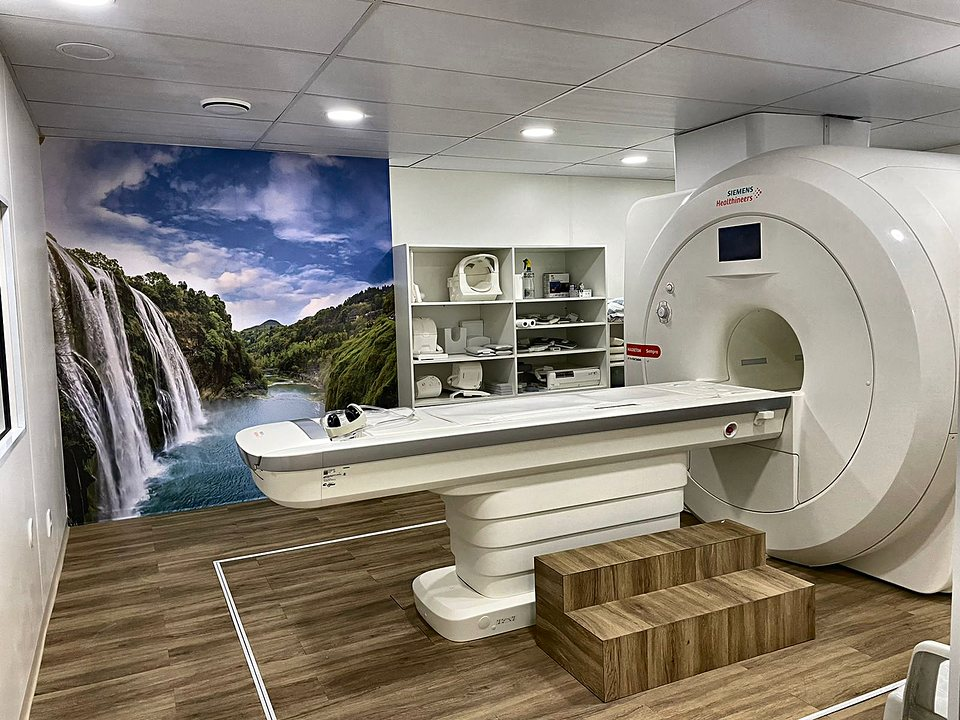
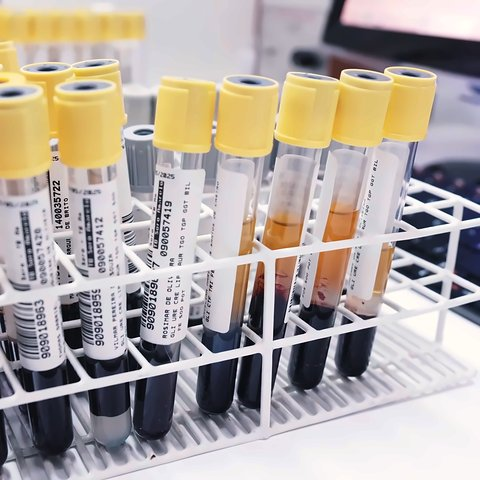
25+anos cuidando
do DF e entorno
QND 47, TaguatingaSeg a sex, 7h às 18h
Você passa pela consulta, faz os exames e acompanha os resultados sem precisar ir a outro endereço.
A detecção precoce do câncer de mama salva vidas. Agende sua mamografia digital ou consulta ginecológica.
Agendar minha mamografiaDa clínica médica à cardiologia, da ginecologia à ortopedia: escolha quem você precisa ver e a gente marca.
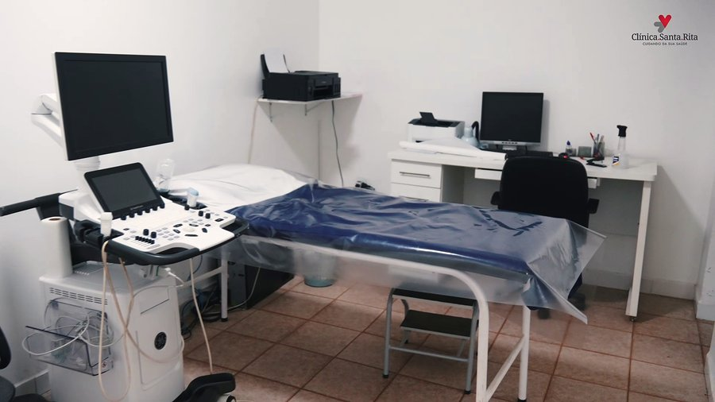
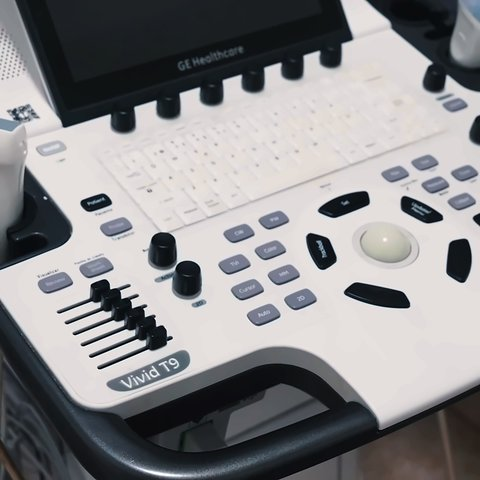
Cardiologiaconsulta e exames no mesmo lugar
Não está na lista, mas pode estar na agenda. Pergunte no WhatsApp
Atendemos outras especialidades além destas. Não achou a sua? Pergunte no WhatsApp
Coleta e análise feitas aqui mesmo, no nosso laboratório. O resultado sai pela internet e você confere pelo celular.
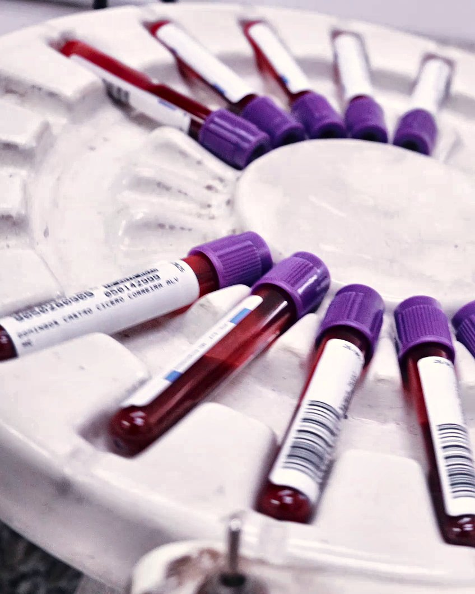
Consultas, laboratório próprio, ressonância magnética, tomografia, mamografia digital, ultrassom, densitometria, eletrocardiograma, ecocardiograma, MAPA e Holter.
Ressonância, tomografia, mamografia, ultrassom e densitometria no mesmo endereço, com laudo feito por especialistas. Escolha o exame e agende pelo WhatsApp.
Imagens detalhadas de cérebro, coluna, articulações e órgãos, feitas com campo magnético.
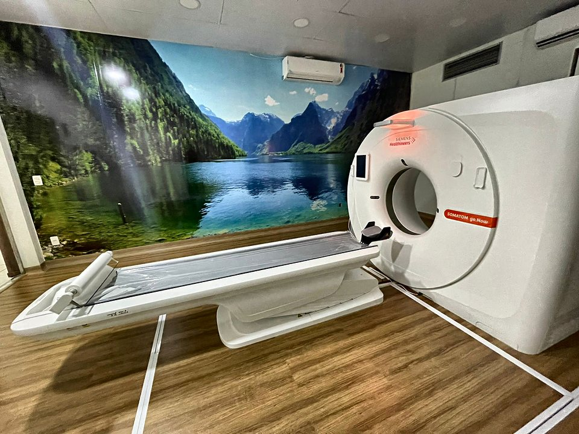
Resultado ágilCortes em alta definição do interior do corpo, em poucos minutos, para diagnósticos rápidos.
Agendar tomografiaO principal exame para a detecção precoce do câncer de mama, com imagem digital de alta nitidez.
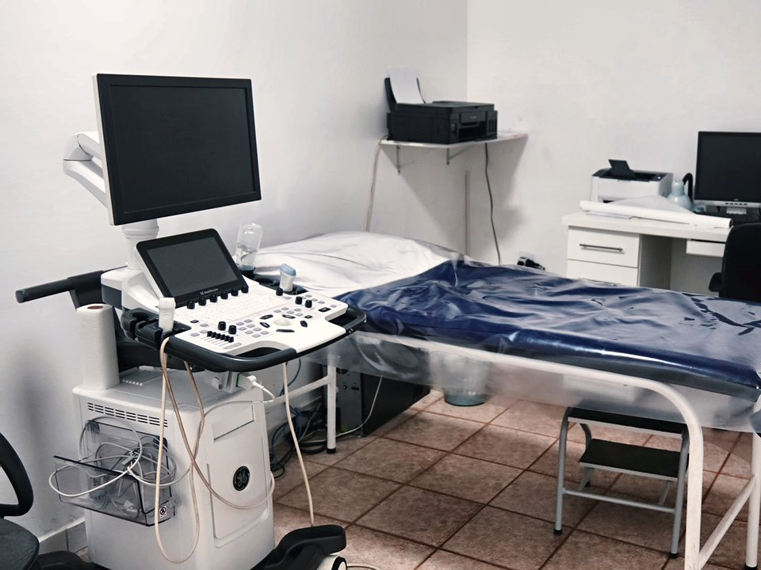
Sem radiaçãoExame indolor feito com ondas de som, que mostra órgãos e estruturas em tempo real.
Agendar ultrassomMede a densidade dos ossos para rastrear a osteoporose e avaliar o risco de fraturas.
Há mais de 25 anos cuidando do DF e entorno.
Uma das clínicas mais estruturadas da região, com uma missão simples: prestar o melhor serviço em saúde para você e sua família.
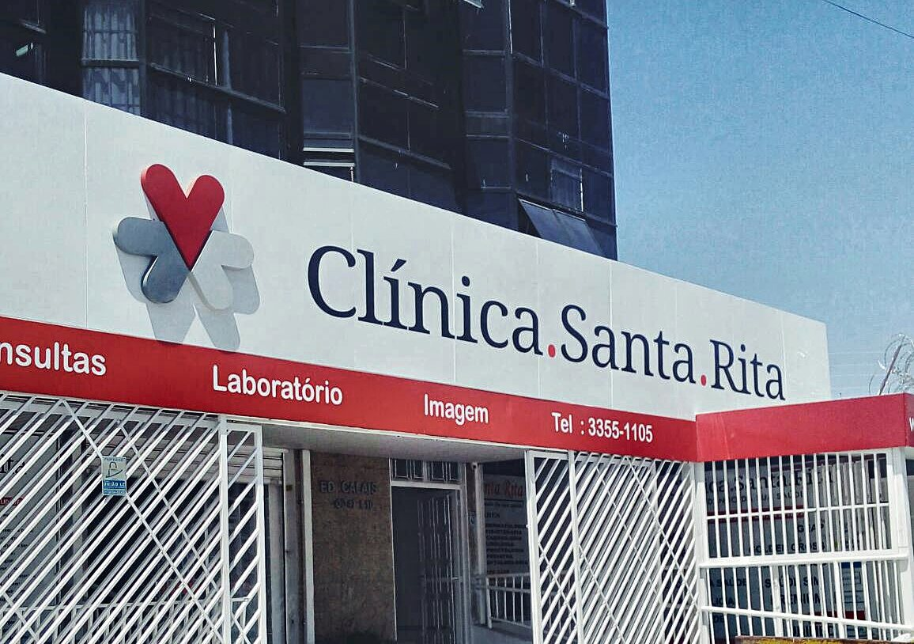
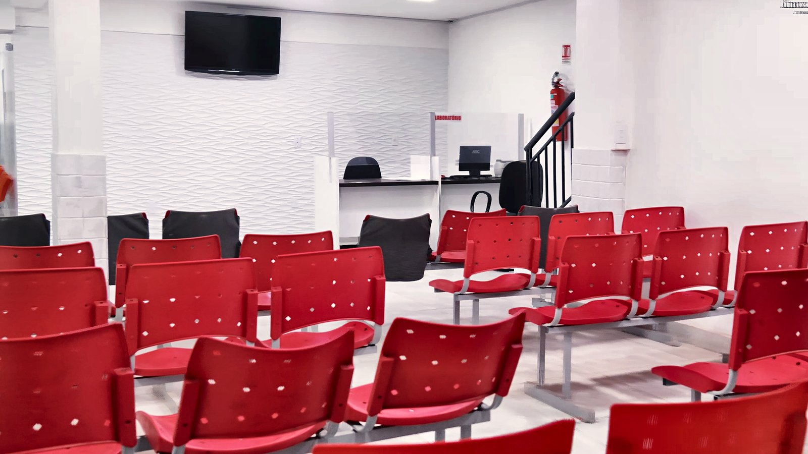
Deixe nome e telefone. Um consultor liga, entende o que você precisa e marca o melhor dia na unidade mais perto de você.
Seg a sex, 7h às 18hTaguatinga até 18h; demais unidades até 17h
Toque numa unidade no mapa ou nas abas para ver endereço, horário e rota. Taguatinga atende das 7h às 18h; as demais, até as 17h.
QND 47 Lote 10, Taguatinga Norte, Brasília-DF
Seg a sex, 7h às 18h
Agendamento, convênios, preparo e resultados: as respostas curtas para chegar tranquilo ao seu atendimento.
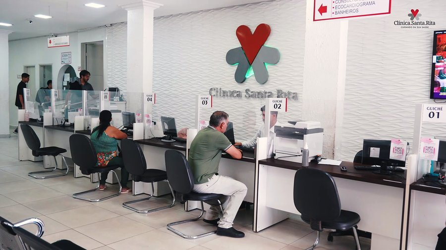
Ainda ficou com dúvida?
Mande a sua pergunta pelo WhatsApp. A equipe responde de segunda a sexta, no horário de atendimento.
O jeito mais rápido é pelo WhatsApp (61) 3355-1107: diga a especialidade ou o exame, a unidade e o melhor período. Também dá para ligar no (61) 3355-1105 ou preencher o pré-agendamento, e um consultor retorna para confirmar data e horário.
Sim. Atendemos particular e os principais convênios. A cobertura muda de um plano para outro e de um procedimento para outro, então o melhor é confirmar antes pelo WhatsApp, informando o nome do convênio e o que você precisa fazer.
De segunda a sexta. A matriz de Taguatinga atende das 7h às 18h; Águas Lindas, Riacho Fundo, Santo Antônio e Sobradinho atendem até as 17h. Alguns exames têm horários próprios, que a equipe informa no agendamento.
Documento oficial com foto, a carteirinha do convênio (se for usar) e o pedido médico, quando houver. Se tiver exames anteriores da mesma região, traga também: ajudam o médico a comparar. Chegue com uns 15 minutos de antecedência para o cadastro.
A matriz fica na QND 47, Lote 10, Taguatinga Norte, Brasília-DF. Também atendemos em Águas Lindas de Goiás, Riacho Fundo, Santo Antônio do Descoberto e Sobradinho. Veja endereços, mapas e rotas de todas as unidades.
Pelo convênio, sim: o plano exige o pedido médico. No particular, depende do exame. Se você ainda não tem o pedido, pode agendar uma consulta com um dos nossos especialistas e já sair com tudo encaminhado.
Cada exame tem seu preparo: jejum, bexiga cheia, evitar algum suplemento ou cosmético no dia. Ao agendar, enviamos as orientações certas para o seu caso. Os principais cuidados de cada exame de imagem estão no Centro de diagnóstico por imagem.
Os exames de laboratório saem pela internet, em Resultados de exames. Eletrocardiograma, espirometria, MAPA e Holter ficam no Painel do paciente. Se tiver dificuldade para acessar, chame a gente no WhatsApp.
Cardiologia, ginecologia, ortopedia, dermatologia, endocrinologia, neurologia, pneumologia, psiquiatria e várias outras. A lista completa está em Especialidades: toque em uma delas e o WhatsApp abre com o pedido de agendamento já escrito.
Exames admissionais, periódicos e demissionais ficam com a nossa parceira Clínica Cemtra, especializada em medicina do trabalho, também em Taguatinga.
Consulta, laboratório e imagem em 5 unidades no DF e entorno, de segunda a sexta a partir das 7h.
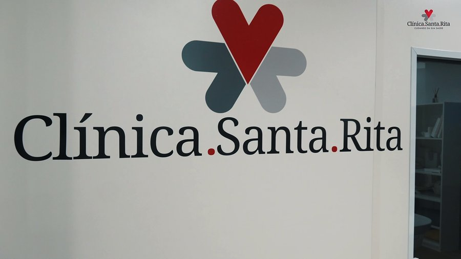
Sugestões, elogios e reclamações chegam direto à gerência e à ouvidoria da clínica.
Matriz: QND 47, Lote 10, Taguatinga NorteSeg a sex, 7h às 18h